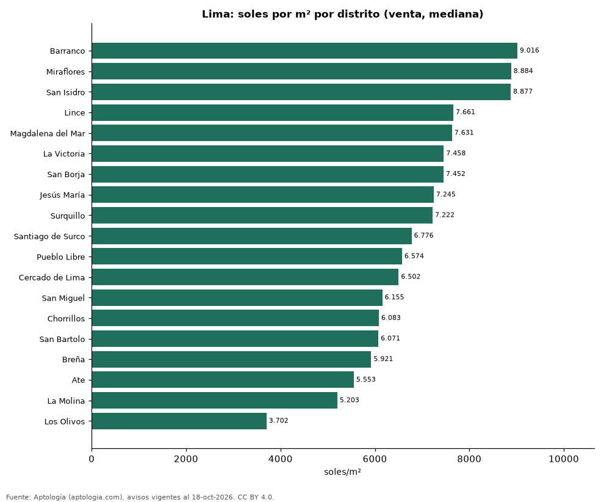

Precio de la vivienda por distrito en Lima: venta y arriendo en 20 distritos (octubre 2026)
Estudio con datos abiertos (CC BY 4.0). Versión original: https://github.com/elbroker/aptologia-datos/tree/main/estudios/precio-vivienda-lima-por-distrito-2026 · DOI: 10.5281/zenodo.23460794
El distrito con el metro cuadrado más caro de Lima es Barranco, con 9.016 soles (USD 2.624) en la mediana de apartamentos en venta; el más barato de la muestra es Los Olivos, con 3.702 soles (USD 1.078). En arriendo, el canon mediano más alto se pide en San Isidro (4.810 soles (USD 1.400) al mes) y el más bajo en San Martín de Porres (1.175 soles (USD 342)).
Resumen: analizamos 8.864 avisos de apartamentos en 20 distritos de Lima con 30 avisos o más.
Actualizado: 18 de octubre de 2026 (datos del 18 de octubre de 2026) · Próxima actualización: mensual.

Resumen
| Indicador | Valor |
|---|---|
| Más caro (venta por m²) | Barranco: 9.016 soles (USD 2.624) |
| Más barato (venta por m²) | Los Olivos: 3.702 soles (USD 1.078) |
| Lima (venta por m², mediana) | 7.343 soles (USD 2.137) |
| Arriendo más alto | San Isidro: 4.810 soles (USD 1.400) |
| Distritos | 20 |
Distritos de Lima
| Distrito | Venta: soles por m² | Arriendo: soles al mes | Avisos (venta / arriendo) |
|---|---|---|---|
| Barranco | 9.016 | 2.800 | 180 / 161 |
| Miraflores | 8.884 | 3.750 | 1.114 / 935 |
| San Isidro | 8.877 | 4.810 | 685 / 475 |
| Lince | 7.661 | 2.475 | 211 / 72 |
| Magdalena del Mar | 7.631 | 2.500 | 286 / 95 |
| La Victoria | 7.458 | — | 168 / s. d. |
| San Borja | 7.452 | 3.145 | 268 / 95 |
| Jesús María | 7.245 | 2.600 | 272 / 90 |
| Surquillo | 7.222 | 2.200 | 346 / 87 |
| Santiago de Surco | 6.776 | 3.500 | 1.039 / 408 |
| Pueblo Libre | 6.574 | 2.250 | 214 / 58 |
| Cercado de Lima | 6.502 | 2.100 | 315 / 34 |
| San Miguel | 6.155 | 2.000 | 399 / 142 |
| Chorrillos | 6.083 | 1.825 | 242 / 46 |
| San Bartolo | 6.071 | — | 73 / s. d. |
| Breña | 5.921 | — | 76 / s. d. |
| Ate | 5.553 | 1.600 | 50 / 30 |
| La Molina | 5.203 | 2.500 | 69 / 63 |
| Los Olivos | 3.702 | — | 36 / s. d. |
| San Martín de Porres | — | 1.175 | s. d. / 30 |
Medianas de apartamentos; — indica menos de 30 avisos. El canon es el mensual sin gastos comunes, condominio ni administración.
Preguntas frecuentes
¿Cuál es el distrito más caro de Lima? Barranco, con 9.016 soles (USD 2.624) por m² en apartamentos en venta (octubre de 2026).
¿Dónde es más barato comprar apartamento en Lima? Entre los distritos con 30 avisos o más, en Los Olivos: 3.702 soles (USD 1.078) por m².
¿Dónde es más caro arrendar en Lima? En San Isidro, con un canon mediano de 4.810 soles (USD 1.400) al mes.
Metodología
- Fuente: exportes nocturnos de la base de datos de Aptología (aptologia.com) del 18 de octubre de 2026: avisos vigentes de vivienda en portales inmobiliarios de 13 países, recogidos por Aptología y vistos en línea entre el 11 y el 18 de octubre de 2026. Corte: 18 de octubre de 2026.
- Depuración: se eliminan duplicados exactos (misma ciudad, zona, tipo, precio, moneda, área, habitaciones y baños) y los precios fuera del percentil 1–99 de cada país, operación, moneda y tipo; el precio por m² usa solo avisos con área declarada entre 12 y 2.000 m² y también se recorta al P1–P99.
- Qué se mide: precios pedidos (publicados), no precios de cierre. En arriendo, el canon mensual sin administración, gastos comunes ni condominio.
- Muestra mínima: cada cifra publicada se apoya en al menos 30 avisos; las celdas con menos se omiten.
- Monedas: nunca se mezclan avisos de monedas distintas sin convertirlos. Conversión a dólares con la tasa de mercado de ExchangeRate-API (open.er-api.com, actualización del 18 Oct 2026): 1 USD = 3.182,80 COP, 1 USD = 18,47 M.N, 1 USD = 5,09 BRL, 1 USD = 3,44 PEN, 1 USD = 982,44 CLP, 1 USD = 1.514,57 ARS, 1 USD = 40,20 UYU, 1 USD = 5.705,37 PYG, 1 USD = 61,27 DOP, 1 USD = 0,89 EUR, 1 USD = 11,72 BOB; la UF chilena a 41.178,64 CLP (mindicador,cl. 18-oct-2026). Los avisos publicados en dólares se usan tal cual.
- Monedas: Venta en soles y arriendo en soles, la moneda en que se publica la mayoría de los avisos de cada operación; los avisos en otra moneda se excluyen. Las equivalencias en dólares entre paréntesis usan la tasa citada.
- Limitaciones: la cobertura depende de los portales que recorre Aptología en cada país y es mayor en las ciudades grandes y en los segmentos medio-alto y alto; el área es la que declara el aviso, sin verificar; los nombres de zona vienen de los portales.
- Privacidad: solo se publican agregados; no se publica ningún dato personal, enlace a avisos ni nombre de anunciante.
- Datos abiertos: datos.csv, licencia CC BY 4.0.
Cómo citar
Pinzón Pineda, D. M. (2026). Precio de la vivienda por distrito en Lima: venta y arriendo en 20 distritos (octubre 2026). Aptología (aptologia.com). https://github.com/elbroker/aptologia-datos/tree/main/estudios/precio-vivienda-lima-por-distrito-2026. Datos: datos.csv, licencia CC BY 4.0.